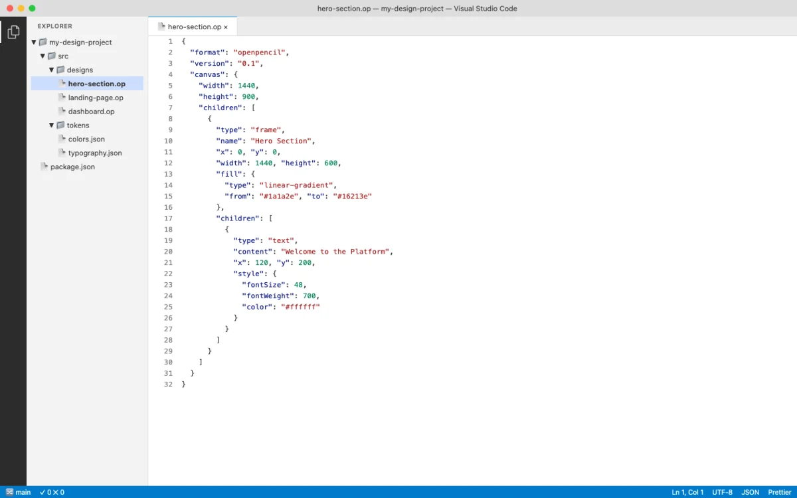
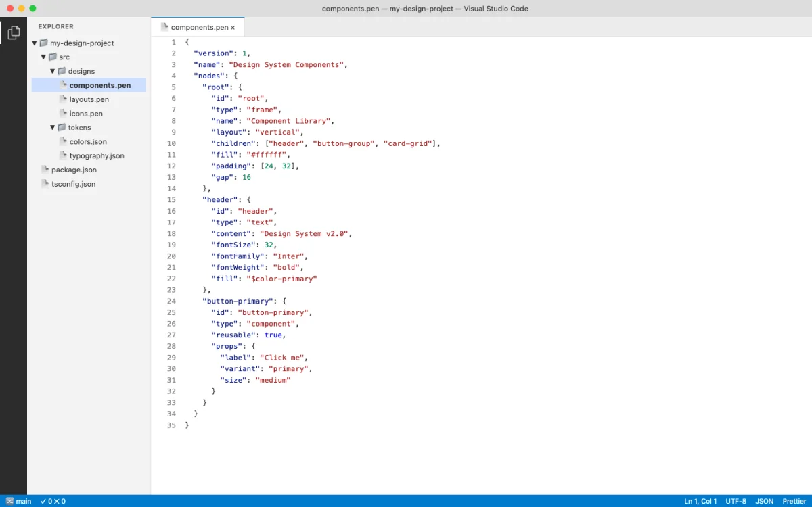
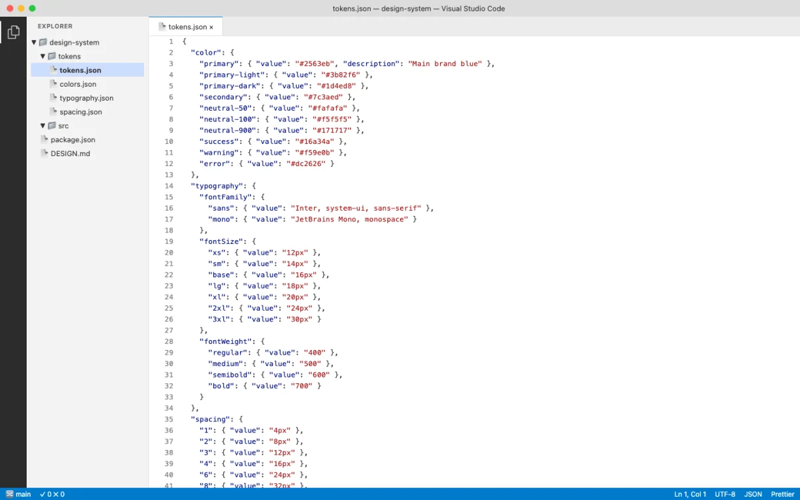
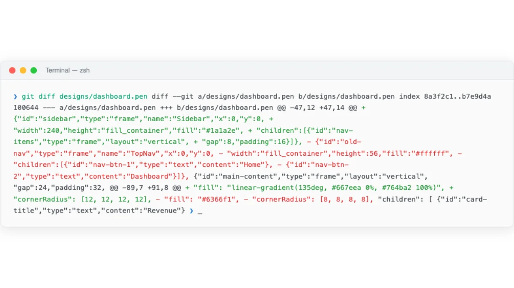

From Static Mockups to Living Design Files
The traditional design workflow is a one-way street. A designer creates a mockup in Figma or Sketch. They export it as PNG or SVG. They hand it to a developer. The developer re-implements every pixel in code. The design file sits in Figma, slowly drifting out of sync with the actual product.
Design-as-code reverses the direction. The design file is code. Or code-adjacent. It lives in the repository alongside the implementation. It changes when the code changes. It gets reviewed in the same pull requests. It stays in sync because it's the same artifact.
This is not a theoretical argument. As of May 2026, three production-grade formats make this real:
- .pen files (Pencil) — vector design files that live in your IDE and sync bidirectionally with code.
- .op files (OpenPencil) — JSON-based design files with native Git support and concurrent agent editing.
- HTML artifacts (Paper, Huashu Design, Open Design) — the design surface is HTML itself, so the output is already production code.
Each format shares a common property: they are text-based or structured JSON. That means git diff shows meaningful changes. Agents can read and write them programmatically. Design review happens in pull requests, not in Figma comments.
Pencil's documentation puts it directly: "Pencil bridges the gap between design and development by putting both in the same environment. Design components, sync them with your code, and let AI assistants help you maintain consistency between design and implementation" (pencil.dev/docs, retrieved 2026-05-18). The tool lives inside the IDE, not in a separate browser tab.
The format-level comparison tells the story clearly:
| Property | Figma (.fig) | Pencil (.pen) | HTML | OpenPencil (.op) |
|---|---|---|---|---|
| Format | Binary blob | Code artifact | Plain text | JSON |
| Diffable | No | Yes | Yes | Yes |
| Git-trackable | Limited | Yes | Yes | Yes |
| Agent-readable | Via API only | Yes | Yes | Yes |
| MCP support | Via server | Built-in | N/A (already code) | Built-in |
| Production output | Export needed | Code generation | Direct | Code generation |
| Responsive | Manual | Token-driven | Native | Token-driven |
| Review workflow | Comments only | PR review | PR review | PR review |
My take: The binary-versus-text distinction is the single most important technical difference between the old design stack and the new one. Binary formats lock you into the tool that created them. Text-based formats give you optionality — you can switch tools, build custom tooling, and let agents participate. The design-as-code bet is that optionality wins over lock-in.
The .pen File Format: Design as a Code Artifact
Pencil's .pen format is the clearest embodiment of design-as-code. A .pen file is a structured, parseable artifact that contains all the information a vector design requires: nodes, styles, components, variables, and layout rules. It's designed to be:


| Property | What It Means | Why It Matters |
|---|---|---|
| Diffable | git diff shows meaningful line-by-line changes |
Design changes are visible in code review |
| Versionable | Tracked in git alongside source code | Design history lives with code history |
| Reviewable | PR reviews can inspect design changes | No separate review tool needed |
| Agent-readable | AI agents read/write via MCP | Agents can generate and iterate on designs |
| Inspectable | Format is documented and parseable | You can build tooling around it |
The format supports Pencil's core concepts: Variables for design tokens, Components for reusable elements, Slots for component composition, and Code on Canvas for running code within the design surface. Chapter 05 covers how to work with these in practice.
A simplified conceptual view of a .pen file structure looks like this:
{
"variables": {
"color-primary": {
"type": "color",
"values": {
"default": "#0066CC",
"dark": "#3399FF"
}
},
"spacing-unit": {
"type": "dimension",
"values": {
"default": "4px"
}
}
}
}The file contains nodes organized in a tree. Each node has a type (frame, text, rectangle, path), layout properties (width, height, x, y), fill and stroke styles, and optional variable bindings. A button component might look like this:
{
"id": "btn-primary",
"type": "frame",
"name": "Primary Button",
"layout": "horizontal",
"padding": [12, 24, 12, 24],
"fill": { "color": "${color-primary}" },
"cornerRadius": [8, 8, 8, 8],
"children": [
{
"type": "text",
"content": "Submit",
"fontSize": 16,
"fontWeight": "600",
"fill": { "color": "#FFFFFF" }
}
]
}Notice the variable reference: ${color-primary} instead of a hardcoded hex value. This is the mechanism that connects the design file to the token system. Change the variable in one place, and every component that references it updates automatically. An agent can change the entire color scheme by modifying a single variable entry.
When the agent reads this file with resolveVariables: true, it gets the computed value for the active theme. The ${color-primary} reference resolves to #0066CC in light mode and #3399FF in dark mode. This is the same pattern as CSS custom properties with media query overrides, but it lives inside the design file.
Pencil also ships a CLI for command-line manipulation of .pen files. This means your CI pipeline can validate design tokens, your build process can export assets, and your agent can commit design changes without opening a GUI:
# Validate tokens and components
$ pencil validate design.pen
# Export assets for production
$ pencil export design.pen --format svg
# Export tokens as CSS custom properties
$ pencil tokens design.pen --format cssMy take: The .pen format is the most agent-friendly design file format I've worked with as of May 2026. The variable resolution system is clever — the same design file produces different output depending on the active theme, without duplicating any nodes. The CLI integration means you can automate design validation in CI without opening a GUI.
HTML as a Design Canvas
HTML is the second design-as-code format, and arguably the most radical. Tools like Paper, Huashu Design, and Open Design use HTML/CSS as the design surface itself. The design artifact is not a mockup that gets translated into code. The design is the code.
This works because HTML has five properties that make it uniquely suited as a design canvas:
| Property | Explanation |
|---|---|
| Universal rendering | Every device has an HTML renderer. No proprietary viewer needed. |
| Responsive by nature | Media queries, flexbox, and grid are built in. No separate breakpoint tooling. |
| Inspectable | DevTools gives you a debugger for your design. Select any element, see its styles. |
| Exportable | HTML is already the production format. No translation step. |
| Agent-friendly | LLMs understand HTML natively. They can generate it reliably at high quality. |
Paper (paper.design) makes this concrete. It's a connected HTML/CSS canvas; Paper's published case studies feature teams at companies including Vercel, Perplexity, PostHog, and Tailwind, among others shipping with AI agents. The design lives as HTML. The export is HTML. There is no translation layer.
Here's what an agent actually sees when it reads a Paper design via MCP. The get_jsx tool returns production-ready Tailwind markup:
<div className="flex flex-col gap-6 p-8 max-w-2xl mx-auto">
<h1 className="text-4xl font-bold text-gray-900">
Build faster with agents
</h1>
<p className="text-lg text-gray-600">
Ship production UI from canvas to code in minutes.
</p>
<button className="bg-blue-600 text-white px-6 py-3
rounded-lg hover:bg-blue-700 transition-colors">
Get started
</button>
</div>That JSX came directly from the canvas. No export step. No hand-coding. The agent read the design and produced clean Tailwind markup in one call.
Huashu Design (14k+ GitHub stars as of May 2026) takes this further. It turns a single sentence into production-grade prototypes, slide decks, motion design, and infographics — all using HTML as the medium. The output is a self-contained HTML file. Huashu Design can export HTML animations to MP4 and GIF. The design artifact is a web page. The output is a web page. Chapter 07 covers Huashu Design in depth.
Consider the contrast with a traditional workflow. A designer creates a card component in Figma. The developer receives a screenshot or inspects the Figma file. They manually translate every spacing value, every color, every border radius into CSS. That translation takes 30-60 minutes per component. With HTML-as-canvas, the agent reads the design and produces the code in seconds. Paper's get_jsx tool is the most concrete example of this in production as of May 2026.
The agent-friendliness of HTML deserves emphasis. Large language models have been trained on billions of HTML pages. They understand semantic structure, accessibility patterns, responsive layouts, and CSS conventions at a level they can't match with proprietary design file formats. When you ask an agent to generate a component in HTML, it draws on vast training data about what makes good markup. When you ask an agent to generate a .fig file, it has nothing to draw on — the format is proprietary and opaque.
This is why HTML-as-canvas tools produce higher quality output with less prompting. The agent doesn't need to learn a new format. It speaks HTML natively. The design constraints (Tailwind classes, CSS custom properties, semantic elements) are constraints the agent already understands.
My take: HTML-as-canvas is the most underappreciated idea in design tooling right now. The translation tax — the cost of converting Figma mockups into production code — consumes thousands of engineering hours per year. Eliminating that translation changes the economics of design-to-production. Paper and Huashu Design are early, but the direction is clear.
Design Tokens and Variables as Code
Design tokens are the connective tissue between design and code. A token is a named value: color-primary, spacing-md, radius-sm. In the old world, tokens lived in Figma's design system panel and were manually synced to CSS custom properties or JSON files. In the design-as-code world, tokens are variables in the same file as the design.

Pencil's variable system is representative. Variables in a .pen file can hold different values per theme — light mode gets one value, dark mode gets another. This maps directly to CSS custom properties:
:root {
--color-primary: #0066CC;
--color-secondary: #FF6600;
--spacing-unit: 4px;
--font-heading: 'Inter', sans-serif;
--radius-sm: 4px;
--radius-md: 8px;
}
@media (prefers-color-scheme: dark) {
:root {
--color-primary: #3399FF;
--color-secondary: #FF9933;
}
}The token format landscape is diverse. Here's how the major formats express the same concept:
| Format | Example | Used By |
|---|---|---|
| CSS Custom Properties | --color-primary: #0066CC; |
Browser, Paper, Huashu Design |
| W3C Design Tokens (JSON) | { "color": { "primary": { "$value": "#0066CC", "$type": "color" } } } |
Style Dictionary, Token Studio |
| .pen variables | Stored in .pen file, resolved at render time |
Pencil |
| .op variables | JSON in .op file |
OpenPencil |
| DESIGN.md schema | Markdown with 9 sections (color, typography, spacing, layout, components, motion, voice, brand, anti-patterns) | Open Design (129 systems) |
Each format has different strengths for agent workflows. CSS custom properties are directly usable in browser output — no translation needed. W3C JSON tokens work well with build tools like Style Dictionary that generate platform-specific output (iOS, Android, web). .pen and .op variables are embedded in the design file, keeping design and tokens in a single artifact. DESIGN.md files give agents a natural language description of the design system, which improves prompt adherence.
The W3C JSON format is worth a closer look because it's the emerging standard for cross-tool token interchange:
{
"color": {
"primary": {
"$value": "#0066CC",
"$type": "color",
"$description": "Primary brand color for CTAs"
},
"secondary": {
"$value": "#FF6600",
"$type": "color"
}
},
"spacing": {
"unit": {
"$value": "4px",
"$type": "dimension"
}
}
}Tools like Style Dictionary consume this format and output CSS custom properties, iOS Swift color sets, Android XML resources, and more — all from a single source of truth. When an agent modifies a W3C token file, every platform's output updates.
The key insight: when tokens are code variables, they become agent-manipulable. An AI agent can read your design tokens, detect inconsistencies, propose new values, and commit the changes. Chapter 08 covers this in depth with token syncing strategies across tools.
Why Diffability Matters for Design Teams
Diffability is the property that unlocks everything else. If a design file is text-based or structured JSON, git diff shows meaningful changes. This single capability transforms how teams work with design.

Consider what a diffable design file enables:
| Workflow | Without Diffability | With Diffability |
|---|---|---|
| Design review | Figma comments, screenshots in Slack | PR review with inline diff, approve/request changes |
| Change history | Figma's internal version history (proprietary) | git log, git blame, revert with git revert |
| Branching | Duplicate files or use Figma branches | git checkout -b, merge when ready |
| Automation | Manual export and validation | CI checks on tokens, linting, accessibility validation |
| Agent updates | Agent can't modify binary files | Agent reads diff, writes changes, commits |
Contrast this with Figma's binary .fig format. When a Figma file changes, git diff outputs "binary file changed." You can't see what changed. You can't review it line by line. You can't run automated checks. The file is opaque to every tool in your development pipeline except Figma itself.
Here's what a real git diff on a design file looks like. An agent changed a button component from a hardcoded red fill to a variable-bound primary color:
--- a/components/button.pen
+++ b/components/button.pen
@@ -12,7 +12,7 @@
"fill": {
- "color": "#FF0000"
+ "color": "${color-primary}"
},
- "cornerRadius": 8
+ "cornerRadius": "${radius-md}"Every detail is visible. The fill changed from hardcoded red to a variable reference. The corner radius changed from a magic number to a token. A reviewer can comment on this in a PR. An agent can generate this diff autonomously. A CI pipeline can validate that all fill values use variable references instead of hardcoded colors.
Consider the concrete implications for a design team of five. Without diffability, a color change requires: a meeting to discuss the change, a Figma file update, an export to the development team, manual code updates across multiple files, and a visual QA pass to verify nothing was missed. With diffability, the same change is a single variable update in a .pen file, committed in a PR, reviewed and approved, and deployed through the same pipeline as code changes. What took two days takes two minutes.
Diffable design files change the economics of design collaboration. A design change becomes a PR. A designer becomes a contributor to the codebase. An agent becomes a design collaborator that commits, reviews, and iterates.
My take: Diffability is the feature that matters most, and it's the one Figma can't easily add without fundamentally changing their file format. I've seen teams spend hours in Figma comment threads debating a color change that would have been a 2-line PR in a diffable format. The PR review workflow for design is not just convenient — it fundamentally changes who can participate in design review.
The Old World vs the New World
The shift from Figma-centric design to design-as-code is not just a tool change. It's a mental model change. Here's the comparison:
| Dimension | Old World (Figma-centric) | New World (Design-as-Code) |
|---|---|---|
| File format | Binary .fig, not diffable |
Text/JSON (.pen, .op, HTML) |
| Location | Cloud (Figma's servers) | Repository (alongside code) |
| Hand-off | Export → share → implement | No hand-off; design IS code |
| Tokens | Maintained separately in code | Variables in the same file |
| AI integration | Figma's own AI features only | Agents read/write via MCP, SKILL.md |
| Review | Comments in Figma | PR review with diff |
| Automation | Plugin API (limited) | CI/CD on design files, agent-driven updates |
| Collaboration | Real-time multiplayer (Figma) | Git-based (branch, merge, PR) + real-time in some tools |
Walk through the same task in both paradigms to feel the difference. The task: change the primary button color from blue to purple across a design system.
Old world. Open Figma. Find the primary button component. Change the fill color. Check every instance where the component is used — some may have overrides. Update the design system documentation separately. Create a Figma branch or duplicate the file. Export screenshots for the developer. The developer receives the screenshots. They find every instance of the old blue in the CSS codebase. They change each one. They miss a few. The design and code drift apart.
New world. Open the .pen file. Change "color-primary" from "#0066CC" to "#6B21A8". Commit. Push. The PR shows the exact diff — one line changed. Every component that references ${color-primary} updates automatically. The agent generates the corresponding CSS custom property change. CI validates that the new color passes WCAG contrast checks. The review is a single PR. The deployment happens in the same pipeline.
The convergence enabling this shift has three parts. First, .pen and .op files are code artifacts that agents can manipulate directly. Second, MCP connects agents to design tools as a standard protocol — no per-tool integration needed. Third, HTML serves as both the design medium and the production output, eliminating the translation tax.
This mental model — design files as code artifacts — underpins every workflow in the rest of the book. The tools change. The formats evolve. The principle stays the same: if your design file is a text-based artifact in your repo, every tool in your development pipeline can work with it.
Next: Chapter 05 puts this mental model into practice with Paper and Pencil — two connected canvas tools that make design-as-code tangible. You'll set up MCP servers, run real design-to-code workflows, and build a production website from a canvas design.